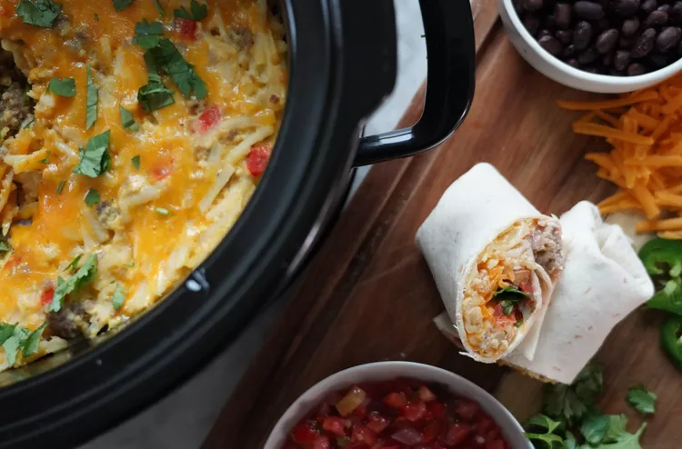

Slow-Cooker Breakfast Burritos

Description
I gotta admit it. I love slow cookers. This Slow-Cooker Breakfast Burrito has
a rich and savory flavor with a combination of ingredients that complement
each other. The slow-cooked eggs, seasoned sausage, and melted
cheese create a creamy and hearty base for the dish. The addition of bell
peppers, onions, and other vegetables provide a slightly sweet and crunchy
texture that adds depth to the overall taste. Perfect for a lazy weekend
morning or for meal prep throughout the week.
Ingredients
- 2 pounds breakfast sausage
- 1 medium onion, finely chopped
- 1 medium bell pepper, finely chopped
- Cooking spray (olive oil is best)
- 1 (16 ounce) package frozen shredded hash browns
- 2 ½ cups shredded Cheddar cheese
- 12 large eggs
- 1 cup milk
- 1 teaspoon salt
- ½ teaspoon ground black pepper
- 12 (10 inch) flour tortillas, warmed
Steps
-
Heat a large skillet over medium-high heat. Add sausage and cook,
breaking it up with the back of a spoon, until lightly browned and
crumbly, about 8 minutes. Add onion and bell pepper; cook until onion
is softened, about 5 more minutes. Blot any excess oil in the pan with
a paper towel. Continue to cook until sausage is cooked completely, 5
to 7 more minutes. Remove from the heat. (This step can be done 1 day
ahead.)
-
Spray slow cooker with cooking spray. Add sausage mixture, hash
browns, and Cheddar cheese.
-
Whisk eggs, milk, salt, and pepper together in a bowl until well
blended. Pour into the slow cooker and stir until evenly combined.
Cook on Low 6 to 8 hours or on High for 3 to 4 hours, stirring after
the first hour.
-
Serve mixture inside warmed tortillas with desired toppings.
Pro tips
-
Use pre-seasoned breakfast sausage for best taste.
The herbier the better.
-
Supplement with sliced bacon for extra decadence.
-
Add spicy elements such as salsa or hot sauce for a zesty kick.
-
Oat milk or coconut milk are the best non-dairy options.